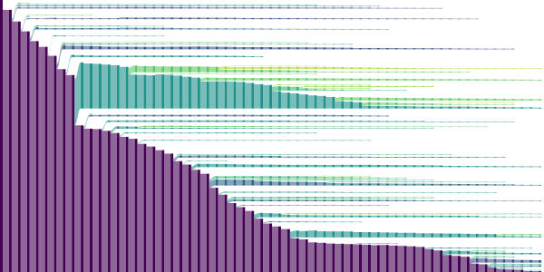

Visualization
[Some example script]
{kind=link}
References
- haccytrees.visualization.merger_tree_drawing(trees, progenitor_array, target_idx, *, max_steps=20, mass_threshold=10000000000.0, method='block', padding=0.05, width=1200, height=600, cmap='viridis', coloring='branch', **kwargs)[source]
Visualize the merger-tree as an svg
- Parameters:
trees (Mapping[str, ndarray]) – the full merger tree forest
progenitor_array (ndarray) – the progenitor array returned by
haccytrees.read_forest()target_idx (int) – the root index of the halo which is to be visualized
max_steps (int) – the number of progenitor steps that are being visualized
mass_threshold (float) – all progenitors below this threshold will be skipped
method (str) – the drawing method that determines the y-position of each progenitor. See the notes for valid options
padding (float) – determines the fraction of padding along the y-axis between neighboring progenitors
width (int) – the width of the svg
height (int) – the height of the svg
cmap (str | Colormap) – the colormap that is used to differentiate the branches
coloring (str) – if
"branch", will color each branch differently. IfNone, all branches will be drawn in blackkwargs – TODO: add additional arguments
- Returns:
drawing – the svg
- Return type:
drawSvg.Drawing
Notes
Valid
methodsare:recursive-center
recursive-bottom
center
block
bottom